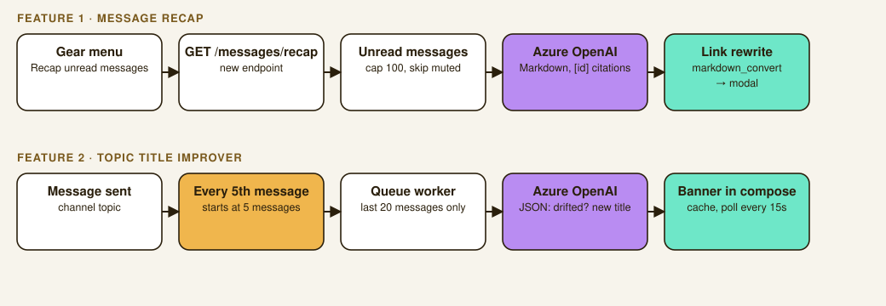

LLM Features for Zulip
Two LLM-powered features built into a real fork of the Zulip chat app: a message recap with clickable citations, and a topic-drift detector that suggests a better title when a conversation wanders.
Overview
Rather than building a toy chat app, this assignment had us add real features into Zulip's actual codebase, an open-source, production-scale chat platform with its own architecture, conventions, and queue-worker infrastructure to work within instead of around. I shipped two LLM-powered features: a message recap that summarizes everything a user hasn't read yet, and a topic-drift detector that notices when a conversation has wandered from its title and suggests a better one.

Message recap
The backend pulls a user's unread messages from Zulip's own UserMessage model, skips anything in a muted topic, and caps the batch at 100 messages so an inactive inbox doesn't blow up the prompt. That gets formatted into a compact block and sent to Azure OpenAI through a shared client, with the model told to write the summary in Markdown and cite message ids in brackets, like [123].
Getting the citation links right took two tries. My first pass built the narrow-to-message URL by hand with an f-string and got the escaping wrong on special characters in topic names. I switched to Zulip's own stream_message_url(), the same function the codebase already uses for things like moved-topic notices, which fixed it immediately and was the right call in hindsight, reuse the function that already handles the edge cases instead of re-deriving them. A regex then finds every citation the model wrote, including cases where it grouped several ids into one bracket, and rewrites each into a real Markdown link before the whole thing gets rendered server-side with Zulip's existing markdown converter. That server-side render step turned out to be necessary, not optional: the frontend's rendering helper only post-processes HTML that's already been converted, it doesn't parse Markdown itself, which I only discovered because my links were showing up as inert plain text.
Topic drift detection
Calling an LLM on every single message would add latency to every send and get expensive at any real volume, so the trigger waits until a topic has 5 messages, then fires again every 5th message after that. History sent to the model is capped at the last 20 messages, so prompt size, cost, and latency per call stay bounded even in a topic with hundreds of messages. The check itself runs asynchronously on Zulip's existing queue-worker infrastructure, enqueued the same way the codebase's own link-embedding feature is, so it never adds latency to the send request that triggered it.
The worker asks the model for a JSON verdict on whether the topic drifted and what to rename it to, parsed defensively so malformed output gets logged and dropped instead of crashing the worker. A suggestion gets cached and a frontend banner polls for it every 15 seconds while the compose box is open, reusing Zulip's existing compose-banner UI pattern rather than building a new one. Accepting the suggestion reuses Zulip's actual topic-rename code path, the same PATCH call its own move-topic UI makes.
Honest limitations
I wrote these down in the project notes rather than glossing over them. The 5-message trigger is a heuristic I haven't tuned against real conversation data. Suggestions live only in an in-memory cache, so a restart or cache eviction loses them. The 15-second poll means a suggestion already sitting in the cache can take up to that long to reach a compose box that was already open, even though detection itself runs immediately on send. At production scale, the obvious next steps would be a per-realm cost cap, matching a pattern the codebase already has for other AI features, and skipping a recheck when nothing in the topic has changed since the last one.
Both features were verified end to end with real Azure OpenAI calls through curl, and with automated browser tests that open the gear menu or drift a conversation and confirm the UI actually does what it claims.